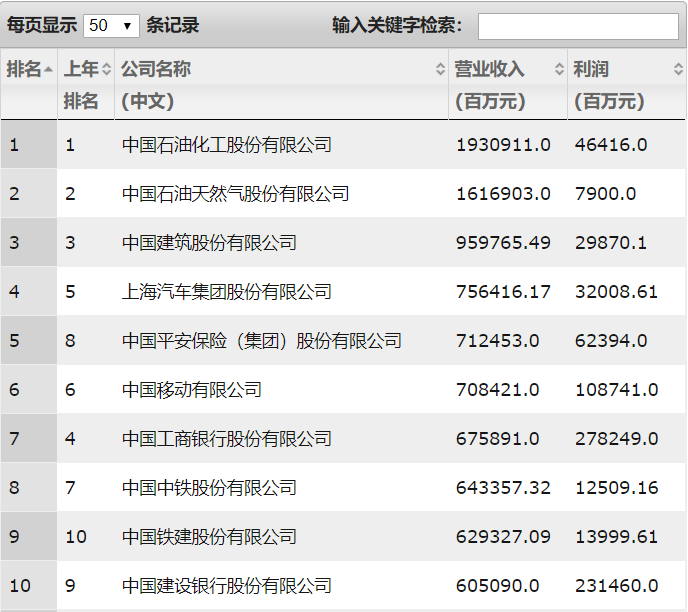
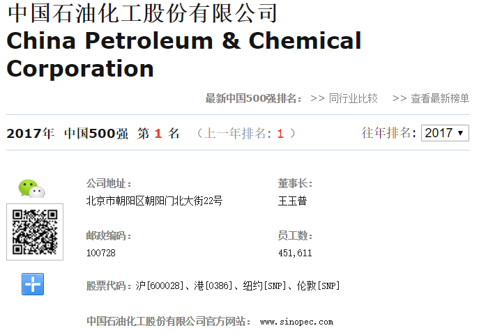
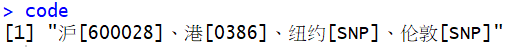
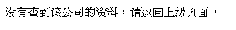
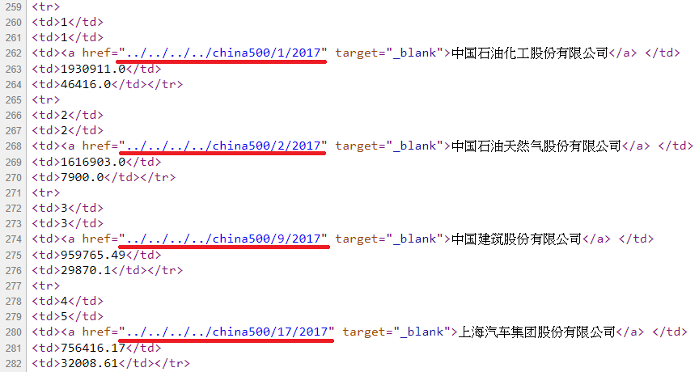
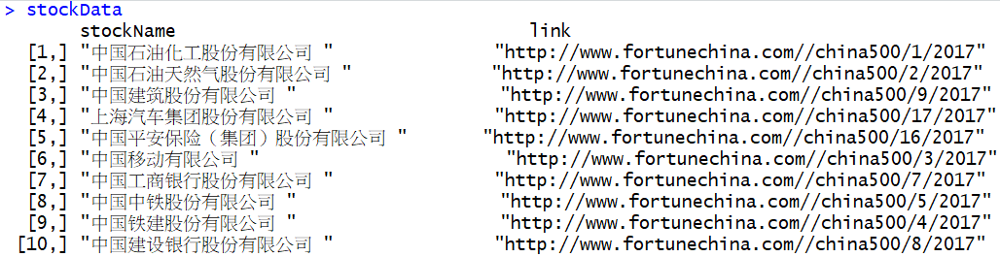
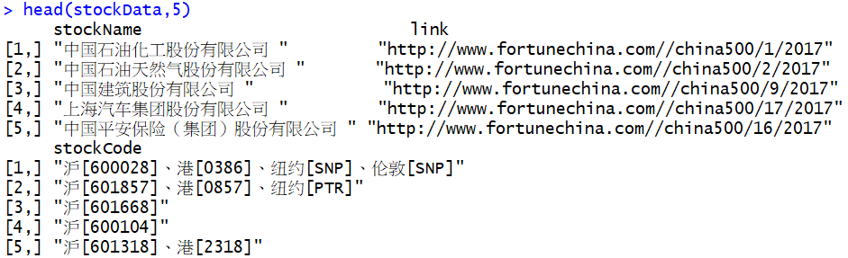

爬蟲-財富中國500強股票排行榜資料
前言
最近學弟想要爬財富中國500強排行榜的網頁資料，但遇到一些困難來詢問我。研究一下網站，發現能力所及能夠處理這個問題，爬得過程也蠻有趣的，因此在這邊分享爬法。先簡介一下財富中國500強排行榜是什麼，網站裡面介紹到：
财富中文网于北京时间2017年7月31日发布了最新的《财富》中国500强排行榜。该榜单由《财富》（中文版）与中金公司财富管理部合作编制，考量了全球范围内最大的中国上市企业在过去一年的业绩和成就。
看到這段介紹，我最好奇的是「過去一年的業績與成就」到底是怎麼量化的，但Google發現好像都沒有相關敘述，這個問題只好暫時擱著，先來抓資料!
目標
學弟這次想問的是要怎麼爬中國500強名單的股票代碼，目前網站上提供的中國500強名單只有列出中文公司名稱、營收及利潤資訊。

如果要查詢股票的進階資訊，可以直接點選公司名稱跳轉到下一個網頁，裡面就會有存放股票的代碼資訊，就是我們想要的資料。

爬取網頁流程
首先試抓第1強的中國石油化工股份有限公司的股票代碼，這家公司有在4個交易所掛牌，所以有4個股票代碼。
library(rvest)
library(magrittr)
# 爬取網頁網址(中國石油化工股份有限公司)
url <- "http://www.fortunechina.com/china500/1/2017"
# 爬取股票代碼
code <- read_html(url, encoding = "UTF-8") %>%
html_nodes(xpath="//div[@class='thisyeardata']/table//tr[3]/td[1]") %>%
html_text() %>%
.[1] %>%
gsub("股票代码：","", .) %>%
gsub("\\s+","", .)
發現資料其實還蠻好抓的，再來觀察網址，發現網址好像藏有規律。
第1名的中國石油化工股份有限公司網址：
http://www.fortunechina.com/china500/1/2017
第2名的中國石油天然氣股份有限公司網址：
http://www.fortunechina.com/china500/2/2017
初步判定網址好像是以 china500/排名/2017 的規律來建構的。如果是這樣，只要迴圈數字1~500，透過字串組合就可以把500家公司的股票代碼全部抓下來。但是事情沒這麼簡單，當我直接輸入排名第500的網址 http://www.fortunechina.com/china500/500/2017，結果網頁出現的畫面是：

網頁竟然查不出資料，代表我們推論的網址邏輯有錯誤。經過仔細檢查發現，發現網址是沒有規律的。第3名的中國建築股份有限公司，我們以為網址的排名竟然是9。
http://www.fortunechina.com/china500/9/2017。
這樣一來，我們就不能用迴圈數字1至500搭配字串組合網址來下載500強公司的代碼，只好找找看有沒有其他的方法。
依照過往經驗，像這種表格式，然後可以點選表格內容跳轉到其他頁面的網站，網頁原始碼內都會藏有超連結。仔細看網頁原始碼，果然真的有！而且500強的連結都存放在裡面。

接下來，我們的目標轉成去爬網頁原始碼內的500強連結，為方便確認資料內容，這邊連股票名稱一起爬下來。
# 爬取網頁網址(財富中國500強排行榜)
url <- "http://www.fortunechina.com/fortune500/c/2017-07/31/content_287415.htm"
# 爬取500強公司名稱
stockName <- read_html(url, encoding = "UTF-8") %>%
html_nodes(xpath="//table[@id='yytable']//tr/td[3]") %>%
html_text()
# 爬取500強連結
link <- read_html(url, encoding = "UTF-8") %>%
html_nodes(xpath="//table[@id='yytable']//tr/td[3]/a") %>%
html_attr("href")
# 整理連結內容
link <- link %>%
gsub("../../../..","", .) %>%
paste0("http://www.fortunechina.com/", .)
# 組合資料
stockData <- cbind(stockName, link)
經過整理後，確實取得500強公司的連結，接下來只要迴圈這500強公司連結，就可以爬到每支股票的代碼。
stockCode <- NULL
for(ix in 1:length(link)){
# 爬取網頁網址
url <- link[ix]
# 爬取股票代碼
code <- read_html(url, encoding = "UTF-8") %>%
html_nodes(xpath="//div[@class='thisyeardata']/table//tr[3]/td[1]") %>%
html_text() %>%
.[1] %>%
gsub("股票代码：","", .) %>%
gsub("\\s+","", .)
# 儲存資訊
stockCode <- c(stockCode, code)
}
# 組合資料
stockData <- cbind(stockData, stockCode)看一下爬取出來的成果，確實沒有問題，大功告成！

comments powered by Disqus